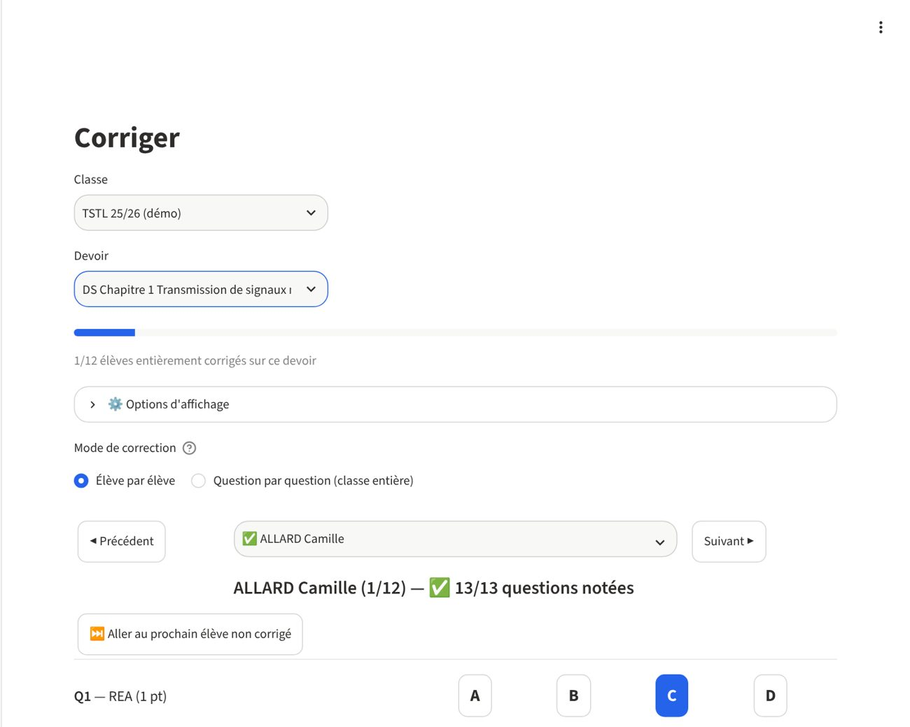
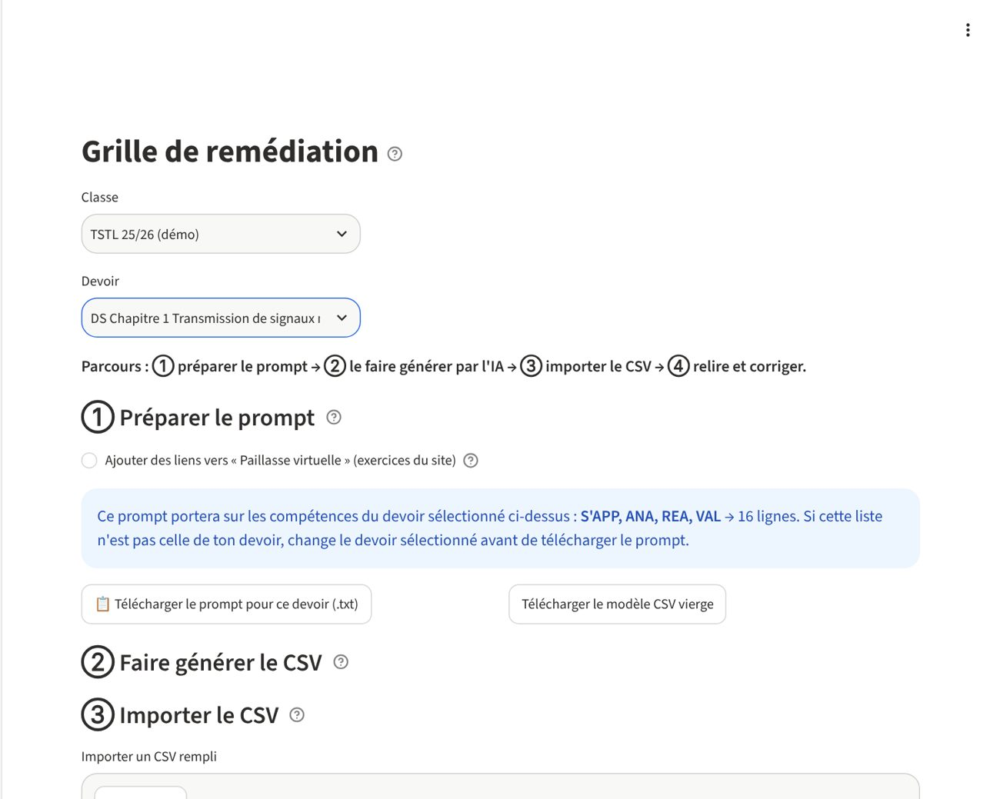
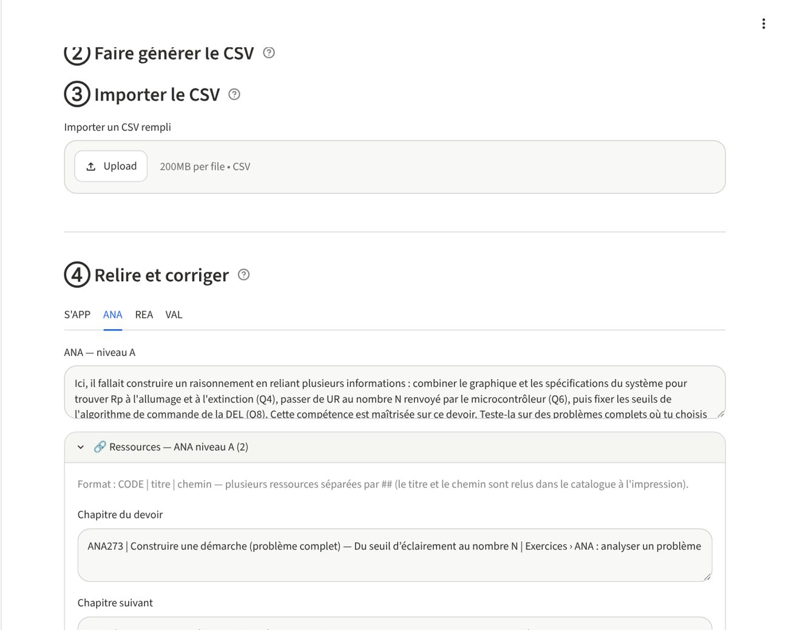
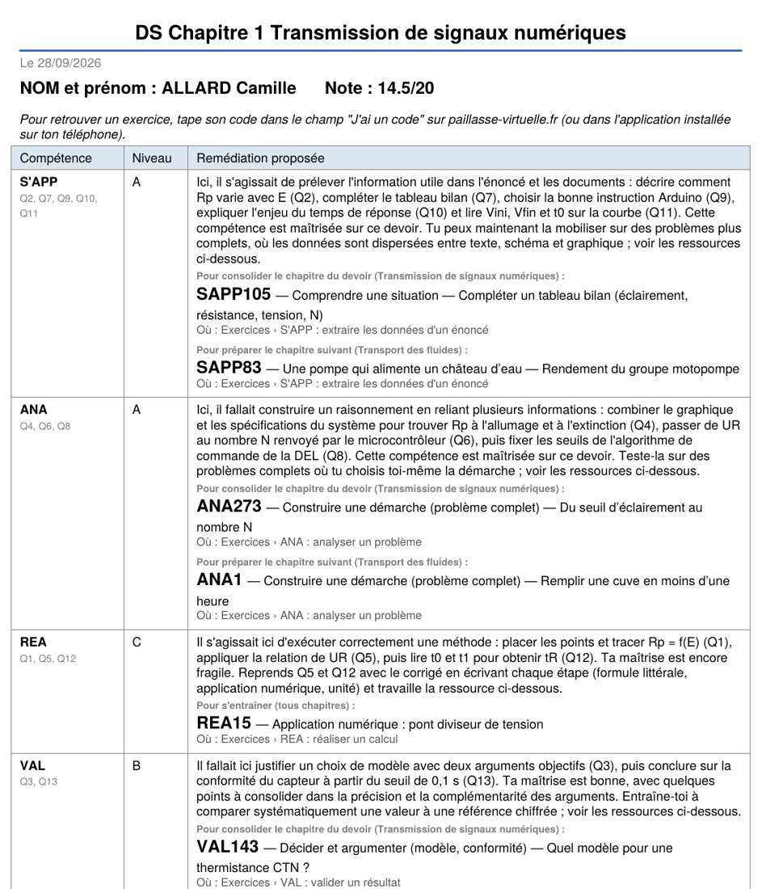

Trajectoire est une application gratuite à installer sur son ordinateur. Elle sert à corriger un devoir par compétences, puis à éditer pour chaque élève une fiche avec son niveau dans chaque compétence et des codes d'exercices de la Paillasse virtuelle (du type ANA273). L'élève tape le code sur la page d'accueil du site et l'exercice s'ouvre.
Tout fonctionne en local, sans compte ni connexion : les noms et les notes de vos élèves restent sur votre ordinateur.
⬇ Télécharger Trajectoire (version 3.13, 0,4 Mo) Voir le mini tutoGratuit. C'est une version en test, faite par un collègue : pas de garantie ni de service après-vente, mais je lis volontiers vos retours.
La démonstration utilise une classe et des copies fictives.
Six étapes, de l'installation à l'élève qui tape son code.
Il faut que Python soit installé sur l'ordinateur (sous Windows, cochez « Add python.exe to PATH » pendant l'installation). Décompressez le zip, puis :
lancer_windows.bat ;lancer_mac.command (au premier essai, clic droit puis « Ouvrir »).La première fois, l'installation automatique prend 1 à 3 minutes. Ensuite, l'application s'ouvre en quelques secondes dans le navigateur. Le fichier README.md du dossier détaille la marche à suivre si le lancement automatique ne fonctionne pas.
Dans Liste des classes et élèves, créez une classe et importez la liste (export CSV de Pronote) ou ajoutez les élèves à la main. Dans Paramétrisation d'une évaluation, créez le devoir : une ligne par question, avec sa compétence (S'APP, ANA, REA, VAL, COM) et son barème.
Dans Corriger, un clic par question : A, B, C ou D. La note et le niveau de chaque compétence se calculent tout seuls, et tout s'enregistre à chaque clic. On peut corriger élève par élève ou question par question pour toute la classe.

Dans Remédiation, l'application fabrique un texte de consigne (le « prompt ») à partir de votre devoir. Cochez l'option qui ajoute des liens vers la Paillasse virtuelle, copiez le prompt dans l'IA de votre choix avec l'énoncé et le corrigé, puis récupérez le fichier CSV qu'elle vous renvoie. L'application elle-même n'appelle aucune IA : c'est vous qui copiez-collez.
Importez ensuite le CSV. L'application relit chaque code dans le catalogue du site : si l'IA en a inventé un qui n'existe pas, il est signalé, et vous pouvez tout relire et corriger avant impression.


Le catalogue des exercices est fourni dans le dossier de l'application (catalogue.csv). Le site s'enrichissant régulièrement, vous pouvez le remplacer par la dernière version.
Dans Édition de rapports, générez le PDF d'un élève ou celui de toute la classe (un fichier par élève dans un zip, ou un PDF unique). Chaque fiche donne la note, le niveau par compétence, un texte qui parle de son devoir, et les codes d'exercices : ceux qui consolident le chapitre du devoir, puis ceux qui préparent le suivant.

Sur paillasse-virtuelle.fr, il écrit le code lu sur sa fiche dans le champ « J'ai un code », clique sur « Ouvrir », et l'exercice s'affiche. Cela marche sur téléphone comme sur ordinateur, sans compte et sans lien à recopier.
Dans un seul fichier, trajectoire.db, rangé dans le dossier Documents/Trajectoire de votre ordinateur, donc en dehors du dossier de l'application. Rien n'est envoyé sur internet. L'application fait des copies de sécurité automatiques dans ce même dossier : dès que vous avez modifié quelque chose et que la copie précédente date de plus d'une heure, en gardant les plus récentes et une par jour pendant 30 jours. Vous pouvez aussi choisir une « copie miroir » dans un autre dossier (clé USB, OneDrive…), et si la base est vide alors qu'une sauvegarde existe, l'application propose de la restaurer. La page Réglages permet de télécharger une sauvegarde : c'est ce fichier qu'il faut restaurer si vous changez d'ordinateur.
Les données des élèves ne quittent pas votre poste. Un point demande tout de même de la vigilance : si vous copiez dans une IA des extraits qui contiennent des noms d'élèves, ce sont vos propres données qui sortent. Le prompt de remédiation ne s'appuie que sur l'énoncé et le corrigé, sans aucun nom.
Non, il faut un ordinateur Windows ou Mac sur lequel installer Python.
Les deux causes les plus fréquentes sont Python absent ou installé sans « Add python.exe to PATH » sous Windows, et le blocage du script par macOS au premier lancement. Les deux sont décrites dans le README.md du dossier. Si rien ne marche, écrivez-moi en indiquant votre système et ce que vous voyez à l'écran.
Cette page porte toujours la dernière version. Décompressez la nouvelle version où vous voulez et lancez-la : vos classes, élèves et notes sont retrouvés automatiquement, puisqu'ils sont dans Documents/Trajectoire et non dans le dossier de l'application. Si vous veniez d'une version antérieure à la 3.12 (où le fichier s'appelait copie_helper.db et se trouvait à côté de l'application), l'application le retrouve et le copie au premier lancement, sans jamais modifier l'ancien fichier.
Trajectoire est développée par Nils Aronssohn, enseignant au lycée Argouges (Grenoble), avec l'aide de Claude (Anthropic).